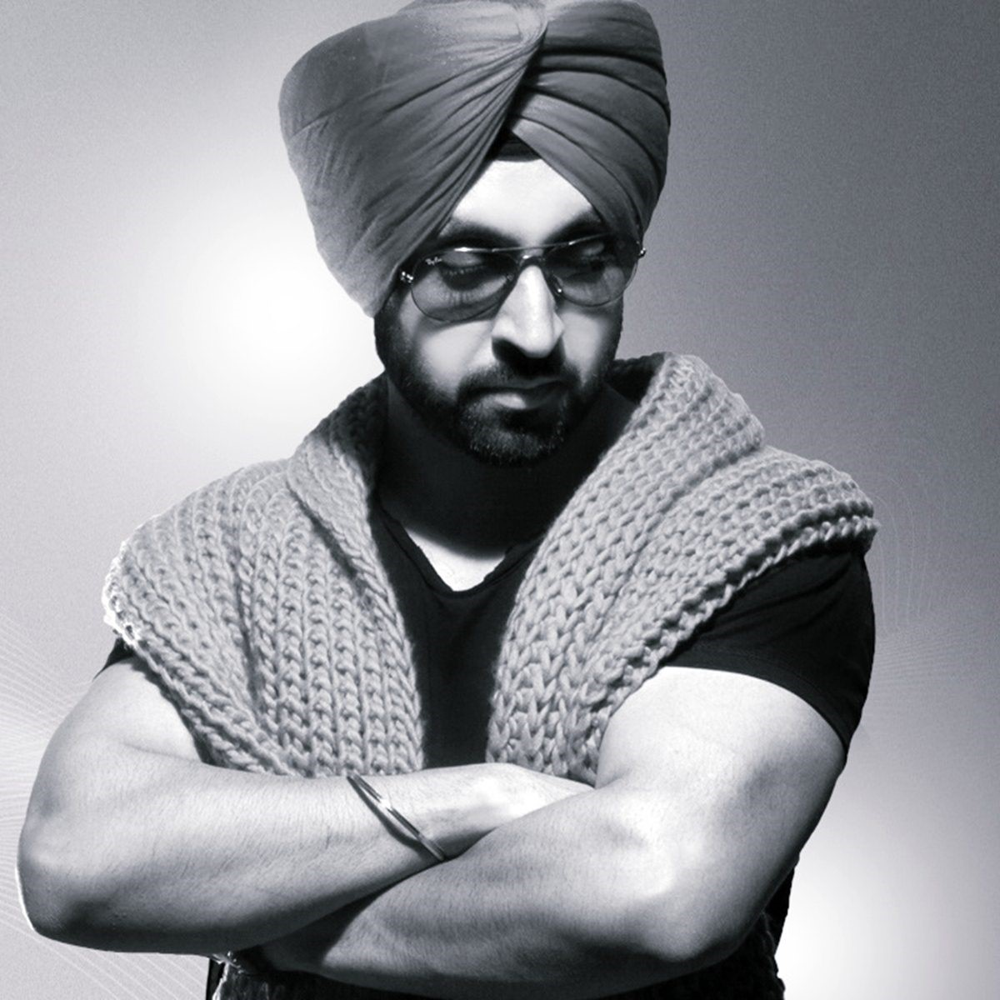

Diljit Dosanjh
About Artist
Dosanjh released his first album Ishq Da Uda Ada in 2004 with Finetone Cassettes, a division of T-Series. Rajinder Singh of Finetone, who helped Dosanjh make a debut in the Punjabi music industry, suggested to him to spell his first name as Diljit instead of Daljit. The music was composed by Bablu Mahindra and the lyrics were written by Balvir Boparai. Dosanjh gave vocals to all the eight tracks and the producers made a music video for the title track of the album. In 2004, his second album Dil was released, which was again with Finetone Cassettes.
Dosanjh's third album Smile, with tracks Nachh Diyan Alran Kuwariyan and Paggan Pochviyan Wale, soared Dosanjh's popularity. The album was released by Finetone Cassettes in 2005. His next album Ishq Ho Gaya was released in 2006 by Finetone Cassettes. His next album, titled Chocolate, came out in 2008. In 2009, Dosanjh released four different singles – Bhagat Singh, No Tension, Power of Duets and Dance with Me. Next year, Dosanjh released his sixth album called The Next Level with nine tracks. Dosanjh gave his next song in 2010 for Mel Karade Rabba: Original Soundtrack. The track was lip-synced by the actor Jimmy Shergill and was included in the feature film of the same name during opening credits.
2011 saw Dosanjh's entry into mainstream Punjabi movies. His debut film in the lead role The Lion of Punjab, was released in February 2011. Though the film flopped at the box office, his track "Lak 28 Kudi Da", from the movie's soundtrack was a major success. The track, featuring Yo Yo Honey Singh, reached number 1 on The Official Asian Download Chart in USA published by the BBC. In July 2011, his second Punjabi movie Jihne Mera Dil Luteya was released. The film, also featuring Gippy Grewal and Neeru Bajwa, did good business. Dosanjh gave vocals to six of the twelve tracks in the film's soundtrack. In November the same year, Diljit declared that he won't release his controversial album Urban Pendu, that included the single 15 Saal.
That single, featuring Yo Yo Honey Singh, talked about promiscuous behaviour of underage girls and their indulgence in alcohol, drugs and tattoos.[11] He wrote on his Facebook page: "It was not my intention to hurt anyone's sentiments. I apologize to my fans who were waiting for this song." Dosanjh wore a T-shirt with the words "Urban Pendu" printed on it in the music video of his 2013 hit single Proper Patola as a remembrance of that track and album. Dosanjh also released three different singles in 2011 – Catty Eyes, Dharti and Chustiyan.